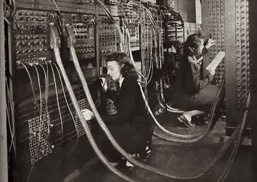

In 1945, the United States Army funded an experiment that they hoped would result in the world’s first operational electronic digital computer. It’s original purpose would be to calculate artillery ballistics. The result was the Electronic Numerical Integrator and Computer (ENIAC), which was an absolutely massive machine. Standing 8 feet high and covering 1800 square feet, the ENIAC was also an overwhelmingly intricate machine, comprised of 5,000,000 soldered joints, 70,000 resistors, 10,000 capacitors, 6,000 manual switches and 1,500 relays. The ENIAC was designed by two engineers: John Mauchly and J. Presper Eckert. In order to make it functional, however, programmers needed to be hired.
During WWII, there were more than 80 female methematicians working as “computers” for the U.S Army, calculating differential equations and ballistic trajectories by hand. These calculations took a really, really long time and so the hope was that a team of human "computers" could be hired to perform calculations using the ENIAC.
This team included Jean Jennings Bartik, who would later lead the development of computer storage and memory, and Frances Snyder Holberton, who would go on to create the first software application. Together with Frances Bilas, Marlyn Wescoff Meltzer, Kathleen McNulty and Ruth Lichterman, they laid the groundwork for future programmers and software engineers. And, since they were the first modern coders, they were instrumental in teaching others to program after the war.
Programming was very different in the forties. In the beginning, the women weren’t even allowed into the ENIAC room because they didn’t yet have the security clearance. Instead, they were expected to code the machine using only paper diagrams of it. These diagrams didn’t come with any instructions - they had to figure it out themselves without any programming languages or manuals, because none existed. The team had to figure out how to manually program the ENIAC, physically putting the data into the machine using thousands of switches, dozens of cables, and multiple trays.
The team succeeded in getting the ENIAC to run the requested ballistics trajectory, and on February 14th 1946, the ENIAC was introduced to the world during a public demonstration. During the demonstration, the ENIAC ran the programmed trajectory, and both the public and the press were fascinated.
But while the male inventors of the ENIAC received awards and publicity, these women received no recognition for their pioneering efforts. They were never introduced, and when their pictures appeared in the press, the captions didn’t even mention their names or roles.
Despite their incredible achievements with the ENIAC, the story of these 6 incredible female “computers” went almost completely ignored by history for roughly half a century. Their stories were virtually lost until the 1980s when a young programmer named Kathy Kleiman rediscovered these women and began conducting archival research to put together their stories. She also began to apply for awards on their behalf, finally bringing their achievements into the spotlight and assuring their well-deserved place in computer history.
Resources: history.com heroinecollective.com